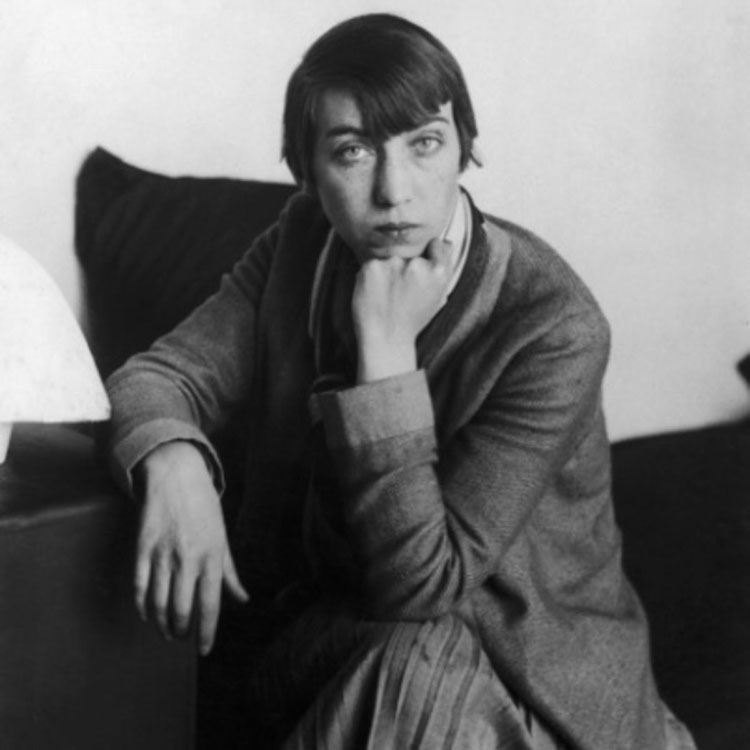
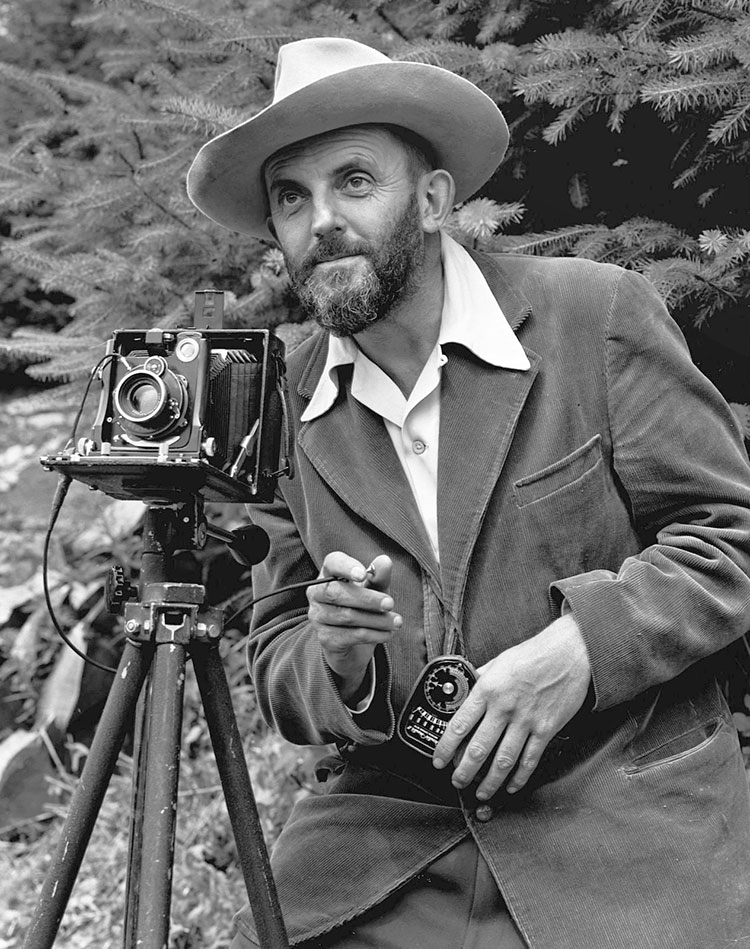
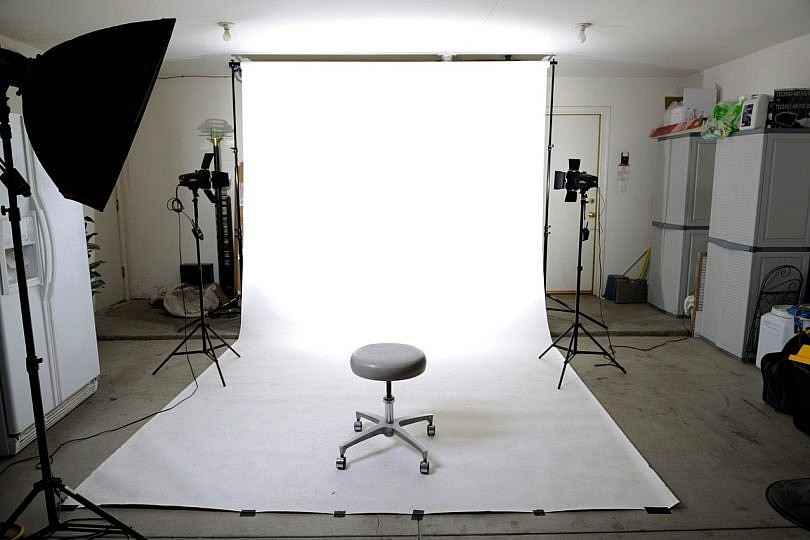
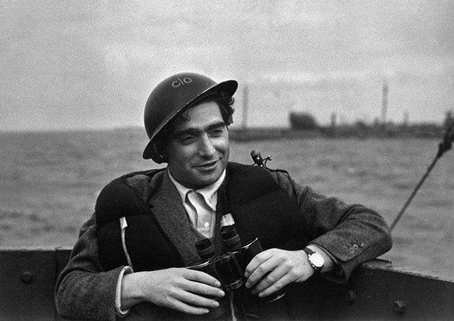

Seguramente, muchas veces te has topado con una foto que te impacta y has dicho “Guau, qué bonita
lafoto”. Bien, pues cuando eso pasa lo más posible es
que estés ante un muy buen trabajo fotográfico.Sin embargo, como fotógrafo profesional o apasionado
por
este arte no puedes quedarte únicamente conla
visión general o el impacto que te genera la imagen. Debes pasar a analizar la
fotografía.¿Cómohacerlo?
Es un proceso en el que debes tener en cuenta
los siguientes puntos:
Nivel técnico:
son los aspectos de la cámara empleados por el autor de la fotografía:
velocidad
de
obturación, profundidad de campo, enfoque,
apertura de diafragma, balance de blancos, nitidez, contrastes, niveles de iluminación, etc. Todos
estos
aspectos deben ser correctos, a menos
de que el fotógrafo haya provocado fallos de forma deliberada para darle mayor calidad artística a
la
imagen.
Nivel de la composición:
se trata de analizar la estructura de la imagen. Piensa en los
elementos de la
imagen y cómo se hallan distribuidos en
el espacio: si llenan el encuadre o no, perspectiva y proporción y la distribución de pesos. Ver si
es
una composición que usa puntos, líneas,
formas geométricas, uso del color, luminosidad y tonalidades.
Significado:
es el más subjetivo de analizar ¿Qué te dice la imagen? ¿Cuál era el propósito
de
la
fotografía? ¿Qué te ha transmitido la fotografía?
¿Qué historia crees que cuenta? La idea es determinar si la foto transmite algún significado y si
hay
algún elemento incongruente con dicho mensaje.
En todo caso, siempre que analices una imagen debes tener en cuenta que, como sucede con una obra de
arte, tu apreciación no será meramente objetiva
porque en ella se mezclaran factores emocionales y técnicos.
Preguntas frecuentes sobre fotografía
¿Qué significa PH fotografía?
Al preguntar qué significa PH fotografía, muchas personas te dirán que es la abreviatura de
photographer
(fotógrafo). Aunque eso es cierto, el término en realidad se refiere al símbolo de phot o foto, que
en
líneas generales es una unidad de medida de iluminación equivalente a un un lumen por centímetro
cuadrado.
Teniendo en cuenta que la fotografía se fundamenta en la acción de la luz sobre material o sensores
fotosensibles, es de vital importancia para determinar la cantidad de iluminación que requiere una
toma
para conseguir un efecto determinado.
“El desafío para mí ha sido en primer lugar, ver las cosas como son, ya sea un
retrato,
una calle de ciudad, o una pelota. En una palabra, he tratado de ser objetiva. No me refiero
a
la
objetividad de una máquina, sino a la de un ser humano sensible con su misterioso y personal
criterio. El segundo reto ha sido el de imponer el orden en las cosas que veo, para
proporcionar
el
contexto visual y el marco intelectual, lo que para mí es el arte de la fotografía.”
Berenice
Abbott
Berenice Abbott

Berenice Abbott¿Qué es el tiempo de exposición en fotografía?
El obturador es una cortinilla que se abre y se cierra en el instante en que disparas la cámara,
controlando así la cantidad de tiempo durante el cual ingresa luz al aparato.
Ese tiempo en que la luz ingresa a la cámara es lo que se conoce como tiempo de exposición o
velocidad
de exposición.
¿Cómo manejar la luz en fotografía?
De acuerdo con los conceptos básicos de fotografía, la luminosidad, más conocida como la abertura
del
diafragma “f”, “es la cantidad de luz que puede llegar a entrar a través de la lente frontal de un
objetivo según su máxima abertura de diafragma (número f)”.
Al manejar con propiedad este concepto y combinarlo con tiempos de exposición adecuados y los
parasoles
correctos, puedes lograr niveles de luz ideales en tus fotografías.
“No tomas una foto, la haces” Ansel Adams
Ansel Adams

Ansel Adams
¿Para qué sirve el parasol en fotografía?
El parasol es un accesorio que colocas en el objetivo o parte frontal de la cámara para proteger la
toma
de los excesos de luminosidad y, por ende, evitar el ingreso de la misma al lente. Así evitas que se
creen halos o destellos que arruinen la toma.
Adicionalmente, el parasol cumple la función de proteger el objetivo de las caídas de la cámara que,
ya
sabes, se pueden presentar en cualquier momento.
¿Qué es un sinfín en fotografía?
Un sinfín es el telón de fondo que usan en los estudios de fotografía. Es imprescindible para
mejorar la calidad de las imágenes.

Cómo mejorar una fotografía
Entre mejor sea la cámara y accesorios (lentes, parasol, filtros, etc.), mayores posibilidades
tienes de mejorar la calidad de tu imagen. Pero, por supuesto, lo que mayor ventaja te va a dar al
respecto es la calidad de la composición y el nivel técnico de tu trabajo.
La fotografía es un arte que, para dominarlo, requiere de sensibilidad artística tiempo, estudio y
buenos equipos. Así que si realmente te apasiona no dejes de investigar sobre el tema e ir
adquiriendo cámaras y accesorios.
“No hace falta recurrir a trucos para hacer fotos. No tienes que hacer posar a nadie ante la
cámara. Las fotos están ahí, esperando que las hagas. La verdad es la mejor fotografía, la
mejor propaganda” Robert Capa
Robert Capa

Robert Capa
Contexto histórico de la época en que se inventó la fotografía
Cuando la fotografía se empezó a dar en Francia en el siglo XVIII existía una marcada división
social en cuanto a los privilegios que representaban la posesión de imágenes: retratos. Con este
nuevo invento, se creaba la necesidad de la difusión masiva de hechos aislados pero
significativos del hombre en la sociedad como medio significativo de una nueva era. Por
consiguiente, se aprecia que cada momento histórico presencia la formación de unos modos de
expresión artística que corresponden al carácter político, a las diferentes formas de pensar y a
los gustos de la época. La fotografía se encuentra entre estas formas de expresión como
protagonista principal, si se tiene en cuenta que casi no hay actividad humana que no la utilice
y se ha vuelto imprescindible tanto en la ciencia como en la industria. Teniendo en cuenta lo
anterior, la fotografía tuvo toda una evolución para llegar a ser lo que es hoy en día. Así
pues, en sus orígenes en Francia, el retrato antecedió a la fotografía y correspondió a una
evolución social muy importante, “el ascenso de amplias capas de la sociedad hacia un mayor
significado político y social” (Freud, 2001). El retrato era el símbolo de las clases
dominantes, pues manifestaba su ascenso en la sociedad tanto de cara a sí mismos como ante los
demás, ya que eran pocos los que podían darse el lujo de hacerse uno de estos. El fisiono trazo
–técnica principal del retrato y de todas sus derivadas- es considerado por los expertos como el
símbolo de un periodo de transición entre el antiguo y el nuevo régimen, y constituye el
precursor inmediato de la fotografía que permitió la difusión, ya no sólo artística, sino
también masiva de ésta. Por tanto, la fotografía, a diferencia del retrato, al convertirse en
una técnica masiva, popularizó la difusión de la imagen entre todos los estratos de la
población.